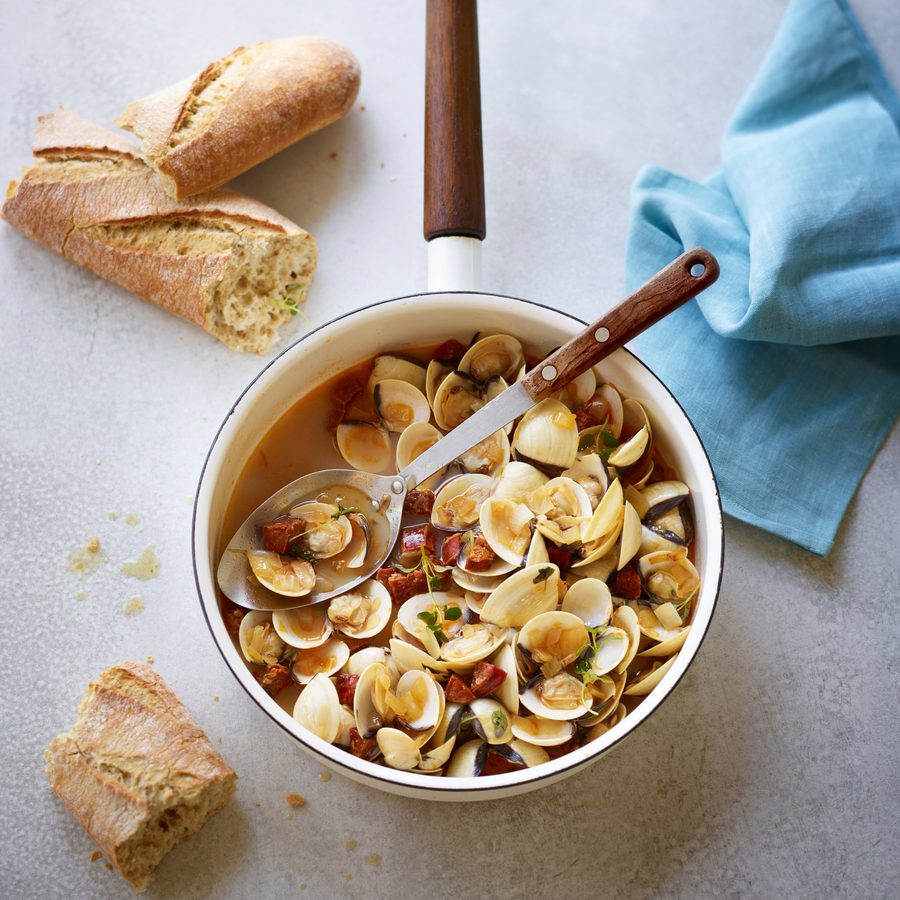

Clams with chorizo

I love clams, whether served with jamon or just on their own with a splash of sherry or white wine. I always thought that chorizo would overpower the delicate sweetness of the clams, but to my delight, I was wrong – this is a must-try. The crispy chorizo adds a lovely texture and the smoky flavour from the pimenton de la vera is a perfect match for fino sherry.
Place the clams in a bowl under cold running water for 5 minutes. Discard any that won’t close.
In a lidded saucepan over a high heat, cook the chorizo in a little olive oil for 6 minutes, until caramelised. Using a slotted spoon, remove the chorizo from the pan and place in a bowl.
Add the onion, garlic and thyme sprig to the chorizo fat in the pan and fry for 10 minutes, or until softened. Increase the heat, add the clams and chorizo back to the pan, pour in the sherry, then cover with a lid. Cook for 3 minutes, or until all the clams have steamed open, discarding any clams that haven’t.
Tip into a large bowl and serve with crusty bread to mop up the juices.